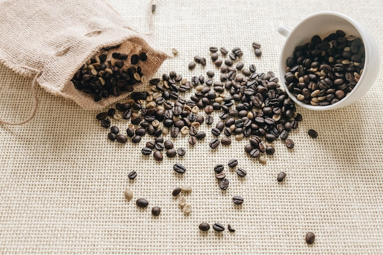

Good coffee at home is less about expensive equipment and more about controlling a few simple variables. Fresh beans, an even grind, a consistent coffee-to-water ratio and clean equipment give you a reliable starting point. From there, small adjustments can help you find a cup that suits your taste.
Coffee begins to lose its aroma after roasting, and ground coffee loses it faster because more of it is exposed to air. Buy whole beans when practical, and grind them shortly before brewing. Store beans in an airtight container away from heat, light and moisture; avoid keeping them in the fridge, where condensation and odours can affect them.
If you buy pre-ground coffee, choose a grind suited to your brewing method and keep the package sealed between uses.
Grind size affects how quickly water extracts flavour from the coffee. A grind that is too fine can make a cup taste harsh or bitter, while one that is too coarse may produce a weak or sour-tasting brew.
As a starting point:
These are broad guidelines rather than strict rules. Grinder design and brewing equipment differ, so adjust the grind if the result is consistently too strong, weak, bitter or sour.
Using a scale makes it easier to repeat a brew and work out what to change. A useful starting range for many filter methods is around 1 part coffee to 15–17 parts water by weight . For example, 20 grams of coffee with 300–340 grams of water falls within that range.
This is not a universal recipe. Use a little more coffee for a stronger cup or a little less for a lighter one, then make one change at a time. Measuring by volume can work, but the weight of a scoop varies with bean size and grind.
Coffee is mostly water, so its taste matters. If your tap water has a strong flavour, try filtered water and compare the results. Use fresh water rather than water that has been repeatedly boiled.
For manual brewing, water just off the boil is a practical starting point. If you have a thermometer, try a temperature in the region of 90–96°C and adjust to taste. Very hot water can bring out more harshness in some brews; cooler water may leave them tasting underdeveloped.
Different methods need different techniques, but consistency helps with all of them.
For a pour-over, wet the filter first if the instructions for your brewer call for it, then add the coffee and pour water evenly over the grounds. Avoid pouring only around the edges or flooding one spot. For a cafetière, stir or pour in a consistent way, let the coffee steep, then press the plunger gently. With a filter machine, make sure the coffee is spread evenly in the basket and follow the machine’s instructions.
Brew times vary by method and equipment. Rather than chasing a single exact time, aim to repeat the same process and use taste to guide adjustments.
If the coffee tastes too bitter or dry, try grinding a little coarser, using slightly cooler water or shortening the brew. If it tastes weak or sharply sour, try a finer grind, a longer brew or a little more coffee. Change only one variable per brew so you can tell what made a difference.
Keep notes if you are experimenting: record the coffee, grind setting, dose, water amount and method. Even a brief note can help you recreate a cup you enjoyed.
Old coffee oils and residue can make fresh coffee taste stale or rancid. Rinse brewers and filters as appropriate after use, and clean grinders, baskets, carafes and removable parts regularly according to the manufacturer’s guidance. Let equipment dry fully before storing it.
A dependable routine is the foundation of better home brewing. Start with fresh coffee and a measured recipe, keep your technique steady, and make small adjustments until the flavour is balanced and enjoyable to you.
This website may use essential technologies to support basic functionality. Review the privacy policy for information about data handling, available choices, and how to contact the business with privacy questions. Do not submit personal details unless you are comfortable doing so. Read the Privacy Policy